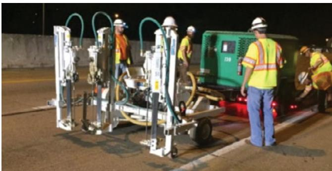
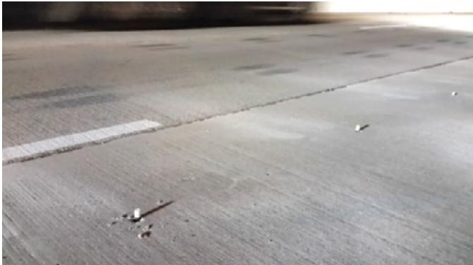
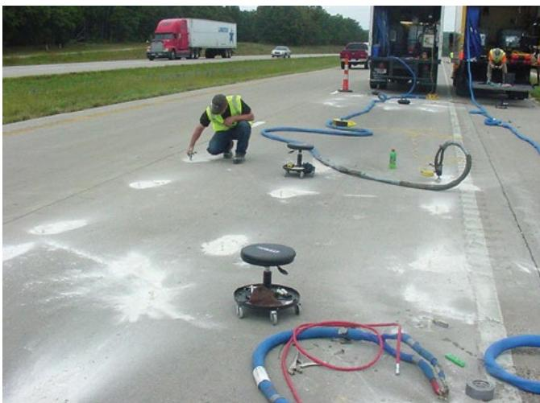
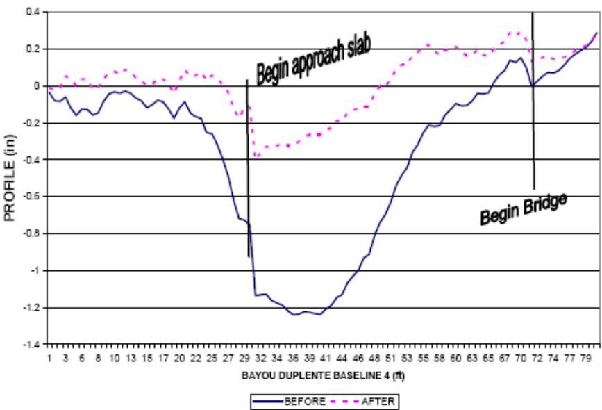
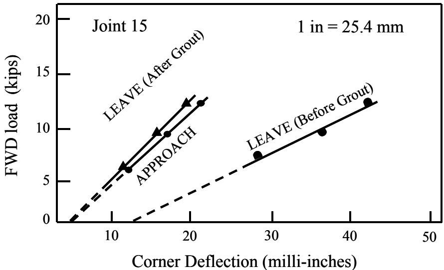

Polyurethane Slab Stabilization
Polyurethane slab stabilization is a treatment applied to concrete pavement slabs, continuously reinforced pavements and bridge‑approach slabs that have developed thin subsurface voids which undermine support and cause settlement, dips, cracking and loss of load transfer【1†ref-1】【4†ref-4】. The method injects a high‑density, two‑component water‑resistant polyurethane foam that expands up to twenty times its liquid volume and can penetrate openings as small as 0.125–0.25 in., filling the voids, raising the slab no more than about a quarter inch per hole, and restoring the intended profile while providing a lightweight (≈3–4 lb/ft³) fill with compressive strength of roughly 60–145 psi【4†ref-4】【5†ref-5】. Because the cured foam is hydrophobic, moisture‑resistant and capable of withstanding traffic, moisture and temperature pressures, it stabilizes the slab, improves load transfer across cracks or joints, and extends pavement service life compared with older grout treatments【4†ref-4】【5†ref-5】.
Sources (5)
Purpose and treatment objectives
Polyurethane slab stabilization is applied to concrete pavement slabs, continuously reinforced concrete pavements, bridge‑approach slabs and similar slab types that have developed thin underlying voids. These voids undermine support and can produce settlement, unevenness, long‑length dips, loss of profile, cracking, joint deflection, and poor load transfer across cracks or joints. The condition may also manifest as slab lift or uplift, a vertical movement monitored with an uplift beam during treatment. By injecting a high‑density, water‑resistant two‑component polyurethane foam that expands substantially (up to twenty times its liquid volume) and can penetrate openings as small as 0.125–0.25 in., the treatment fills the voids, stabilizes the slab, restores the intended profile, and improves load transfer. [1][4][5]
[1] — Ch. 10 (p. 333); [4] — Ch. 4 (pp. 84–94); [5] — Ch. 4 (pp. 82–83)
Distress characterization and causes
The distress treated by polyurethane slab stabilization appears as isolated faulted slabs or long‑length depressions in the pavement surface—often dips extending more than fifty feet—that create uneven elevation. Because even a small differential can induce cracking, the slab must be raised no more than about a quarter inch at any one hole and the overall profile kept within roughly three‑tenths of an inch; otherwise tensile stresses develop and concrete fracture can occur, compromising structural integrity and safe vehicle operation. [4]
The following figure illustrates the effectiveness of this process by showing a bridge approach slab’s profile before and after stabilization.
 Bridge approach slab profile before and after slab jacking. [4]
Bridge approach slab profile before and after slab jacking. [4]
This visual evidence demonstrates how slab jacking fills thin subsurface voids to restore the intended profile of a bridge approach slab.
[4] — Ch. 4 (pp. 92–94)
The distress addressed by polyurethane slab stabilization is driven primarily by moisture infiltration or drainage failure that creates thin subsurface voids beneath concrete slabs, removing bearing support and permitting settlement and joint deflection under load. Repetitive traffic pressures and temperature‑driven expansion/contraction add further stresses that accelerate degradation, especially where load‑transfer devices are ineffective or structural capacity is reduced. These combined mechanisms produce weak support and progressive deterioration, requiring a material that can flow into very narrow gaps while retaining sufficient strength and durability to resist moisture, temperature, and traffic loads. [4][5]
The figure below illustrates how these mechanisms lead to potential deterioration of the subbase near critical structural distress points.
 Cross-section of a concrete pavement punchout showing subbase disintegration and pumping. [5]
Cross-section of a concrete pavement punchout showing subbase disintegration and pumping. [5]
The figure displays a block diagram of a concrete pavement section where the slab has fractured into multiple pieces, creating a localized area of structural failure known as a punchout. Beneath the broken slabs, the subbase material is depicted with irregular lines and labeled as “disintegrated,” indicating that the underlying support has been lost.
[4] — Ch. 4 (pp. 84–85); [5] — Ch. 4 (pp. 82–83)
Applicability and treatment selection
The guides indicate that polyurethane slab stabilization is appropriate for pavements where voids beneath concrete slabs must be addressed, specifically continuously reinforced concrete pavement (CRCP) and bridge‑approach slabs. It is described as an “effective method of leveling CRCP and bridge approach slabs”. The treatment requires a material that “must be able to penetrate very thin voids” and can expand enough to fill openings “as small as 6.4 mm (0.25 in) … as small as 3.2 mm (0.125 in)”. Its “strength and durability to withstand pressures caused by traffic, moisture, and temperature” make it suitable where traffic loads are present but the performance does not rely on joint action; the guides note that the material “did not appear to provide much support to the joints as the joints were observed to be deflecting under traffic loadings”, so it is less appropriate for jointed plain concrete pavements with deficient load‑transfer devices. Environmental considerations include moisture sensitivity – the foam is “sensitive tothe presenc water” – but “Hydrophobic polyurethane materials are preferred for filling voids since they repel water, and the cured structure is unaffected by the presence or absence of water.” The low‑density formulation provides a “Light weight (so does not contribute to additional settlement)”, which is advantageous on soils prone to subsidence. [4][5]
[4] — Ch. 4 (pp. 84–85); [5] — Ch. 4 (p. 83)
Polyurethane slab stabilization is unsuitable when the pavement is jointed plain (or jointed) concrete and the primary issue is loss of joint support. In those situations the foam can fill voids but “does not provide much support to the joints as the joints were observed to be deflecting under traffic loadings,” especially where load‑transfer devices are non‑functional. If field observations indicate that the treatment “neither improved nor degraded the existing pavement” or otherwise yields no measurable performance benefit, a different repair or preservation method should be employed. Additionally, projects in which the required foam volume cannot be reliably estimated—“shortcomings in the ability to estimate material quantities”—should also consider alternative approaches. [4][5]
The figure below illustrates concrete pavement joint spalling and blowup, conditions where polyurethane stabilization is often ineffective.
 Examples of joint sealant failures: missing and debonded sealant (left) and incompressible materials in joint (right) [4]
Examples of joint sealant failures: missing and debonded sealant (left) and incompressible materials in joint (right) [4]
The figure displays two examples of concrete pavement joints exhibiting distress, specifically showing a wide gap with missing sealant on the left and a joint filled with debris and foreign material on the right.
[4] — Ch. 4 (pp. 84–85); [5] — Ch. 4 (p. 83)
Condition assessment and timing
To determine whether polyurethane slab stabilization is required, the guides prescribe a sequence of inspections, measurements, and tests. First, a visual inspection looks for visible dips or faulted sections in the slab surface. Elevation differences are then quantified: isolated depressions are checked with a straightedge; depressions longer than about 50 ft are surveyed using a rod and level; and the overall slab profile is mapped at regular intervals (≈5 ft) by the traditional taut‑string line method or, where available, by laser scanning. When measured elevation differences exceed the allowable tolerance of roughly one‑quarter inch, those locations are identified for injection hole placement. In addition, an uplift beam—a beam‑like movement‑detection device—is installed on the slab and monitored for upward displacement; any measurable lift signals voids beneath the slab and further pinpoints injection points. [1][4]
[1] — Ch. 10 (p. 333); [4] — Ch. 4 (pp. 92–94)
Materials and repair details
The stabilization system relies on an expansive, high‑density, two‑component, water‑resistant polyurethane material that expands up to twenty times its liquid volume. The cured foam is lightweight, with a density of about 3–4 lb/ft³ (≈64 kg/m³) and a compressive strength ranging from roughly 60 to 145 psi (0.4–1.0 MPa), sufficient for traffic loads. Injection is performed through small drilled holes; the material can consistently penetrate openings as small as 0.25 in. (6.4 mm) and, in some cases, as small as 0.125 in. (3.2 mm). All material is stored, proportioned, and blended within a self‑contained pumping unit, and delivery to the holes uses plastic nozzles that screw onto the hoses, differing from larger grout packers. After injection each hole is temporarily sealed with a tapered wooden plug to maintain pressure while the foam cures (typically 15–30 min). Once set, the plugs are removed, excess foam is trimmed flush with the pavement surface, and the holes may be left unpatched or filled with an approved patching material. Less frequently, other stabilization media such as asphalt cement, limestone‑dust cement grouts, or silicone rubber foam have been used, but polyurethane remains the primary choice across the guides. [4][5]
The following figure illustrates the initial step of this process: drilling holes for polyurethane foam installation on I-24 West in Tennessee.

Drilling holes for polyurethane foam installation on I-24 West in Tennessee. [4]The image shows a specialized mobile rig with vertical drilling mechanisms positioned on the pavement surface, accompanied by workers wearing high-visibility safety gear and hard hats.
[4] — Ch. 4 (pp. 84–94); [5] — Ch. 4 (pp. 82–85)
The guides agree that a polyurethane used for slab stabilization “must be able to penetrate very thin voids” and also “must be able to penetrate into very thin voids.” They further require the material to have “strength and durability to withstand pressures caused by traffic, moisture, and temperature,” as well as “having the strength and durability to withstand pressures caused by traffic, moisture, and temperatures.”
The product is described as an “expansive, high‑density, two‑component, water‑resistant polyurethane material” with a density of about 3 to 4 lb/ft³ (“For slab stabilization purposes, the polyurethane density is about 3 to 4 lb/ft3”) or equivalently “Polyurethane density is about 64 kg/m² (4 lb/ft²).” Its compressive strength ranges from roughly 60 to 145 psi (“the compressive strength ranges from about 60 to 145 lbf/in2”) to 0.4–1.0 MPa (“the compressive strength ranges from about 0.4 to 1.0 MPa (60 to 145 lbf/in²)”). The foam can “expand up to twenty times its liquid volume” and “will consistently penetrate openings as small as 6.4 mm (0.25 in) and will penetrate some openings as small as 3.2 mm (0.125 in).”
Compatibility considerations note that “Hydrophobic polyurethane materials are preferred for filling voids since they repel water, and the cured structure is unaffected by the presence or absence of water,” yet the material is also described as “water‑sensitive and requires dry conditions for proper cure.” In either case the cured foam remains stable regardless of moisture.
Performance depends on existing pavement condition. The guides report that “continuous‑reinforced concrete pavements (CRCP) and bridge approach slabs have shown good response,” whereas “jointed plain‑concrete pavements (JPCP)” or other jointed sections may still exhibit deflection: “the material did not appear to provide much support to the joints as the joints were observed to be deflecting under traffic loadings” and “jointed concrete sections may still exhibit joint deflection if load‑transfer devices are inadequate.” [4][5]
The figure below illustrates the recommended deflection testing locations for these jointed concrete pavements.
 Recommended deflection testing locations for jointed concrete pavements. [5]
Recommended deflection testing locations for jointed concrete pavements. [5]
The figure illustrates a schematic layout of a pavement section with transverse joints, indicating specific points for basin and load-transfer testing at the mid-slab and near the corners. This testing plan is used to detect voids and loss of support by measuring deflections at the approach and leave sides of joints, which helps evaluate the effectiveness of treatments like polyurethane slab stabilization.
[4] — Ch. 4 (pp. 84–85); [5] — Ch. 4 (pp. 82–83)
Treatment procedures
Begin by drilling the required injection holes and, if needed, cutting a relief opening as part of the preliminary work. Polyurethane is then pumped in small increments, never raising any point more than 0.25 in. at a time, while monitoring the slab profile with string‑line or laser methods and progressing from the center of the dip outward to keep the entire slab within a uniform plane. After injection the temporary plugs are removed, excess material is trimmed flush with the surface, and the holes may be left unpatched because the polyurethane fills them, or they can be sealed with an approved patching material. [4]
The figure below illustrates the injection holes drilled into a concrete slab as part of this stabilization process.

Injection holes in concrete slab [4]The image displays a section of a concrete pavement surface featuring several small, drilled injection holes.
[4] — Ch. 4 (pp. 92–94)
Implementation of polyurethane slab stabilization requires a modest field equipment set that includes low wooden blocks (0.75 in. high) placed on the pavement surface along outer and inner edges with a reference line—traditionally a taut string line secured at least 10 ft from each end of the depression—or, increasingly, laser‑level instruments to establish wheel‑path profiles (typical maximum spacing of 5 ft). Drilling rigs are used to create insertion holes, after which a self‑contained pumping unit stores, proportionates, and blends the two‑part liquid and delivers it through plastic nozzles that screw onto the hoses. The sequencing begins at the center of the dip, raising the slab no more than a quarter inch per hole while progressing outward in a balanced pattern to keep the entire slab within the same plane and avoid cracking; each injection is followed by a curing period during which traffic must be excluded until the foam has fully set, preventing joint deflection under load. Work should be performed under dry conditions with moisture excluded from the injection zone because the polyurethane material is sensitive to the presence of water. [4][5]
The following figure illustrates typical grout insertion hole patterns used during the stabilization of jointed concrete pavements.

Field crew performing polyurethane slab stabilization on a concrete pavement. [4]The image shows a worker in high-visibility gear kneeling to mark or inspect the surface of a concrete highway, surrounded by white chalk outlines indicating specific injection points. A specialized pumping unit and truck are parked on the shoulder with hoses running across the pavement to connect to the drilling or injection equipment.
[4] — Ch. 4 (pp. 92–94); [5] — Ch. 4 (pp. 83–85)
Quality and workmanship
Inspection of a polyurethane slab stabilization job must address four key areas: Materials – confirm that the foam meets the required density and strength (“For slab stabilization purposes, the polyurethane density is about 3 to 4 lb/ft3 and the compressive strength ranges from about 60 to 145 lbf/in2”). Verify it can enter the smallest targeted voids (“One laboratory study indicated that the injected polyurethane will consistently penetrate openings as small as 0.25 in. and will penetrate some openings as small as 0.125 in.”). Preparation – ensure all holes are drilled to the proper depth and any relief openings cut before raising the slab (“After all preliminary work has been completed (i.e., holes drilled and relief opening also cut if needed), the pavement is ready to be raised.”). Installation – monitor injection so that the slab remains within a uniform plane; no portion may exceed a quarter‑inch deviation (“The entire working slab and all those adjacent to it must be kept in the same plane, within 0.25 in., throughout the entire operation to avoid cracking.”). Completed work – after cure, remove temporary plugs, trim excess foam flush with the surface, and patch or leave injection ports as approved. [4]
[4] — Ch. 4 (pp. 84–94)
A satisfactory polyurethane slab stabilization is defined by both geometric and material performance thresholds. Geometrically, the treated surface must remain within a very tight elevation band: no individual injection hole should raise the slab more than about a quarter‑inch, and at no time may any portion of the slab be higher than that same amount relative to adjacent sections. The guides state that “This method can consistently achieve profiles within tolerances of 0.25 to 0.38 in.” and that “A good rule is not to raise a slab more than 0.25 in. while pumping in any one hole.” Moreover, they require that “No portion of the slab should be more than 0.25 in. higher than any other part of the slab (or an adjacent slab) at any time.” The final grade must fall inside the profile tolerances achieved by string‑line or laser monitoring, typically within roughly a quarter‑to‑three‑eighths of an inch of the desired elevation, ensuring a single‑plane surface and preventing cracking. Materially, the foam must expand sufficiently to fill even the smallest detectable voids—down to openings on the order of 3 mm (approximately 0.125 in). The references note that “the injected polyurethane will consistently penetrate openings as small as 6.4 mm (0.25 in) and will penetrate some openings as small as 3.2 mm (0.125 in)” and that “polyurethane density is about 64 kg/m² (4 lb/ft²) and the compressive strength ranges from about 0.4 to 1.0 MPa (60 to 145 lbf/in²).” The injected material should achieve a free‑rise density in the low‑50 kg/m³ range (about 64 kg/m² or 4 lb/ft²) and develop a compressive strength at least on the order of 0.28 MPa, with many systems targeting 0.4–1.0 MPa. Successful treatment is further indicated by observable leveling of the slab without subsequent joint deflection under traffic loads. [4][5]
The following figure illustrates these geometric performance thresholds by showing the profile of a bridge approach slab before and after stabilization.

Profile of bridge approach slab before and after slab jacking (Gaspard and Morvant 2004). [5]The figure displays a longitudinal profile graph comparing the elevation of a concrete pavement section at two distinct stages. A dashed pink line illustrates the post-treatment profile, demonstrating that the depressed section has been raised to align with the surrounding elevation. This visual evidence supports the concept of slab stabilization by showing how the process fills subsurface voids and restores the intended profile, which is critical for preventing cracking and maintaining load transfer.
[4] — Ch. 4 (pp. 92–94); [5] — Ch. 4 (p. 83)
Performance and service life
The guides agree that polyurethane slab stabilization relies on “Using an expansive, high‑density two‑component water‑resistant polyurethane for slab stabilization allows the material to flow into very thin voids and then harden with sufficient strength and durability to resist traffic loads, moisture intrusion and temperature fluctuations.” Both sources stress that the material “must be able to penetrate into very thin voids while having the strength and durability to withstand pressures caused by traffic, moisture, and temperatures.” The foam can reach openings as small as 6.4 mm (0.25 in) and even some as tiny as 3.2 mm (0.125 in), “fills voids as small as 0.125 in., creates a lightweight yet high‑strength fill, and quickly cures,” which together “improve the pavement’s surface condition by eliminating settlement and enhancing load transfer across cracks.” By providing this robust support, “the pavement surface remains smoother and more functional, its condition is preserved, and the overall durability of the slab is enhanced, which in turn extends the expected service life compared with older cement‑grout treatments.” Because the material is moisture‑insensitive and possesses high compressive and tensile strengths, it can sustain traffic loads without degrading, thereby supporting functional performance and durability over time. Field observations note that “trial projects are performing well after 1 year of service,” demonstrating short‑term durability, although longer‑term performance remains less documented and jointed sections may still experience deflection when load‑transfer devices are inadequate. [4][5]
The following figure illustrates how center slab deflection varies along a project under standardized loading conditions.
 Center slab deflection variation along a project normalized to a 9,000 lbf loading. [4]
Center slab deflection variation along a project normalized to a 9,000 lbf loading. [4]
The figure plots the normalized maximum deflection of concrete pavement slabs against distance along the roadway, revealing significant spatial variability in structural stiffness. This data is used to identify subsections where distress or poor moisture conditions may be adversely affecting the pavement, which helps determine if stabilization treatments are needed.
[4] — Ch. 4 (pp. 84–85); [5] — Ch. 4 (pp. 82–83)
The guides identify several recurring distresses that can arise when polyurethane slab stabilization is applied. A dominant failure mode is inaccurate estimation of the required foam volume, which may result in substantial over‑application or under‑filling and consequently reduced effectiveness. Both sources note “shortcomings in the ability to estimate material quantities” and cite examples such as “Vermont has achieved similar success … but has noted difficulties in estimating quantities, resulting in a substantial overrun (Ellis 2015).”
Another frequent distress is continued joint deflection despite void filling. The guides explain that when load‑transfer devices are missing or non‑functional the injected foam “did not appear to provide much support to the joints because the joints were observed to still be deflecting under traffic loadings; however, it was also reported that the load transfer devices … were not functioning” (Gaspard and Morvant 2004). This condition is reinforced by the observation that “the relatively low compressive strength of the foam compared with the loads applied” can limit joint support.
A third, more subtle issue is the lack of measurable improvement in pavement performance after treatment. The Tennessee Department of Transportation experience is quoted: “the application neither improved nor degraded the existing pavement (Fortunatus 2018).”
Cracking induced by excessive lift increments constitutes a distinct distress. The guides stress strict tolerance limits: “No portion of the slab should be more than 0.25 in. higher than any other part of the slab (or an adjacent slab) at any time,” and advise that “the slab must be raised only a very small amount at each hole at a time. A good rule is not to raise a slab more than 0.25 in. while pumping in any one hole.” Failure to observe these limits can generate tensile stresses, as described: “If, for example, pumping is started at either end of a dip, the tension on the top surface will be increased and the slab will undoubtedly crack,” and “Care must be taken not to prematurely flatten the middle out completely. This will cause a sharp bend and cracking.”
Across the sources, the development of these distresses is linked to several influencing factors: poor pre‑project calculations, inadequate assessment of joint condition and load‑transfer device functionality, inappropriate selection of pavement type for polyurethane treatment, insufficient control over injection sequencing and lift magnitudes, and variability in foam material properties. Adherence to manufacturer guidelines and involvement of experienced personnel are repeatedly emphasized as essential to mitigate these failures. [4][5]
[4] — Ch. 4 (pp. 84–94); [5] — Ch. 4 (p. 83)
Monitoring and follow-up
When, after polyurethane slab stabilization, pavement joints continue to deflect under traffic loads and associated load‑transfer devices remain non‑functional—or when the injected material does not appear to provide adequate structural support to the joints—these performance signs indicate that additional maintenance, repair, or rehabilitation is required. [4][5]
The following figure illustrates this improvement by showing a load versus deflection plot before and after slab stabilization.

Example of load versus deflection plot before and after slab stabilization (Darter, Barenberg, and Yrjanson 1985). [5]The figure displays a load-deflection graph comparing the structural response of a concrete pavement joint at two different stages: before and after slab stabilization treatment. It shows that the ‘LEAVE (After Grout)’ curve is positioned significantly to the left of the ‘LEAVE (Before Grout)’ curve, indicating a reduction in corner deflection for a given FWD load. This visual evidence supports the concept that slab stabilization is used to restore support and reduce pavement settlement by filling subsurface voids, as the graph demonstrates improved stiffness after the process.
[4] — Ch. 4 (pp. 84–85); [5] — Ch. 4 (p. 83)